padding-box:从内边距
content-box:从内容区域即其子元素

box-shadow:0 1px 4px rgba(0, 0, 0, 0.3), 0 0 40px rgba(0, 0, 0, 0.1) inset;
第一个是外阴影，第二个是内嵌阴影，注意看inset这个属性
background:liner-gradient(to bottom,#fff,#999)
渐变方向等价与180deg 颜色的起始点和终点
http://www.css88.com/book/css/values/image/radial-gradient().htm
border-image:url(border.png) 70 70 70 70 round;
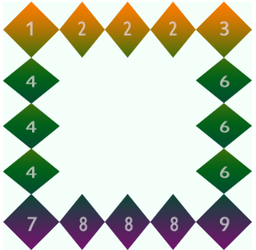
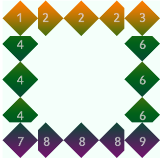
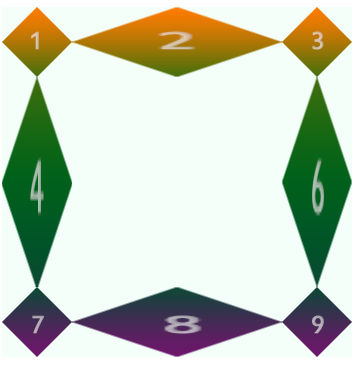
设置是否使用省略标记
text-overflow:clip(剪切)|ellipsis(显示省略标记)
强制文本在一行显示
溢出内容为隐藏
文本超过容器边界时是否转行
normal(控制连续文本换行)|break-word(内容将在边界内换行
javascript
text-overflow:epllipsis;
overflow:hidden;
white-space:nowrap;
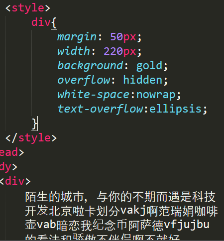
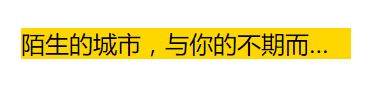
自定义字体
javascript
@font-face{
font-family:字体名称；
src:字体文件路径
}
text-shadow:x-Offset Y-Offset blur color;
blur:阴影的模糊程度，不能为负
text-shadow: 2px 2px 20px red,-2px -2px 20px white;加逗号可以设置多个阴影
背景图片的起始点
border-box:从边框
padding-box:从内边距
content-box:从内容区域即其子元素
裁剪背景位置
属性:
border-box
padding-box
content-box

值： auto：使用默认值 长度值：200px 50px 百分比 cover:覆盖，等比缩放填满整个容器 contain:容纳，等比缩放至贴紧容器边缘
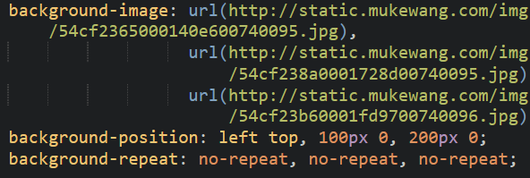
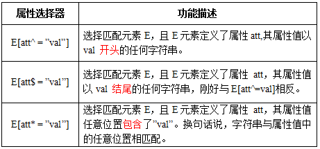
div:not([id=footer]){
background:orange;
}
选择器表示的就是空。用来选择没有任何内容的元素，这里没有内容指的是一点内容都没有，哪怕是一个空格。
选择器称为目标选择器，用来匹配文档(页面)的url的某个标志符的目标元素。我们先来上个例子，然后再做分析。
#brand:target p {
background: orange;
color: #fff;
}
</style>
</head>
<body>
<div class="menuSection" id="brand">
<h2><a href="#brand">Brand</a></h2>
<p>content for Brand</p>
</div>
</body>
URL 带有后面跟有锚名称 #，指向文档内某个具体的元素。这个被链接的元素就是目标元素(target element)
transform:rotate(20deg);
正值为顺时针
transform:skem(20deg,5deg);

transform:scale(1.8,1.8);
前值为X轴方向，后值为y轴方向（即宽高）
注意： scale()的取值默认的值为1，当值设置为0.01到0.99之间的任何值，作用使一个元素缩小；而任何大于或等于1.01的值，作用是让元素放大
transform:translate(100px,100px);
transform；translate(50%,50%);
http://www.zhangxinxu.com/wordpress/2012/06/css3-transform-matrix-%E7%9F%A9%E9%98%B5/
Matrix()与translate()关系：translate(x,y)对应Matrix(1,0,0,1,x,y);
Matrix()与scale()关系：scale(x,y)对应Matrix(x,0,0,y,0,0);
Matrix()与rotate()关系：rotate(x)对应Matrix(cos(x),sin(x),-sin(x),cos(x),0,0)
Matrix()与skew()关系：skew(x,y)对应Matrix(1,tan(x),tan(y),1,0,0)
用来设置元素的运动基点，transfrom-origin：50% 50%表示元素运动基点在整个中心是个默认值。px代表元素运动离元素运动基点的距离
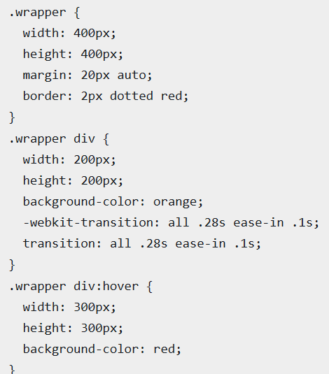
指定过渡的css属性
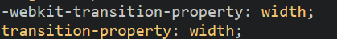
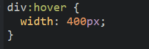
假设你的初始状态设置了样式“width”,“height”,“background”,当你在终始状态都改变了这三个属性，那么all代表的就是“width”、“height”和“background”。
从一个属性过渡到另一个属性需要的时间
transition-duration:0.2s;
触发动作，过渡开始前的时间
transition-delay:.2s;
值：
ease:速度由快至慢
linear:匀速
ease-in:渐显(加速) （比ease效果更明显）
ease-out:渐隐（减速）
ease-in-out:渐显渐隐（先加速再减速）
@keyframes changecolor{
0%{
background:yellow;
}
40%{
background:red;
}
60%{
background:blue;
}
}
div:hover{
animation:changecolor 5s ease-in .2s;
}
值：
none：无动画效果，可用覆盖任何动画
indent:@keyframes创建的动画名
值：
infinite无限或数字
animation-iteration-count:5;
值：
normal:每次循环都是向前播放
alternate:偶数次向前播放，奇数次反向（反复）
值：
paused暂停
running播放（从暂停的地方开始播放）
demo:当鼠标放到元素上时元素才会移动
div{
animation:move;
animation-duration:10s;
animation-timing-function:ease-in;
animation-delay:2s;
animation-direction:alterate;
animation-play-state:paused;
}
div:hover{
animation-play-state:running;
}
值：
none：动画结束后回到初始帧状态
forwards:动画结束后停止在最后一帧状态
backwards:在animate-delay指定的时间之前应用初始帧
both:forwards+backwards
http://www.zhangxinxu.com/wordpress/2012/09/css3-3d-transform-perspective-animate-transition/
值： width+列数‘
columns:150px 3;
column-count: 3;
column-gap: 2em;
column-rule:1px solid red;
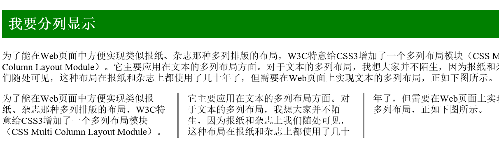
 在自适应布局中通常会因为padding将布局打乱，border-box可解决
在自适应布局中通常会因为padding将布局打乱，border-box可解决
.dov1{
width:60%;
}
.div2{
width:40%;
padding:40px;
box-sizing:borde-box;
}
http://www.ruanyifeng.com/blog/2015/07/flex-grammar.html?utm_source=tuicool
display:flex;
主轴方向flex-direction:row|row-reverse|column|column-reverse
决定侧轴flex-wrap:nowrap|wrap|wrap-reverse
以上简写：flex-flow:<flex-direction>值 flex-wrap值；
主轴对其方式：justify-content:flex-start|flex-end|center|space-between|space-around
侧轴对其方式:align-items:flex-start|flex-end|center|stretch|baseline
多行侧轴对其方式：align-content:flex-start|flex-end|center|space-between|space-around
排列顺序：order:数字（数值越小排列越靠前）
若想设置两个元素一个排第一，一个排最后则需将前者设为-1；后者设为0即可
放大flex-grow：数字（按元素比例，默认为0）
缩小flex-shrink:数字（按元素比例2倍3倍等，默认为1）
伸缩基准值：flex-basis:auto(默认)|
以上三种属性的缩写flex:none(0 0 auto)|[flex-grow(必须) flex-shrink(可选) flex-basis(可选)] （默认为0 1 auto）
flex-self覆盖align-items
常用：srceen(电脑屏幕) all(全部) print(打印或打印预览模式
（1）link中调用
<link style="text/css" url="" rel="stylesheet" media="srceen" ></link>
//默认为all
（2）样式文件中引用媒体类型
@media srceen{
选择器{样式代码}
}
（3）在head中调用
<head>
<style type="text/css">
@media{
选择器{样式代码}
}
</style>
</head>
用法同media，除media的第一个方法外 （1）
@importurl(reset.css) print;
（2）ie6,ie7不兼容
<head>
<style type="text/css">
@importurl(reset.css) all;
</style>
</head>
定义适用于何种屏幕大小的设备中
@media srceen and (max-width:800px){
.ads{
display:none;
}
}
//当屏幕等于或小于800px时，广告窗口消失
@media srceen and (min-width:800px){
.wrapper{
width:900px;
}
}
//当屏幕大于800px时，.wrapper容器宽度变为900px
综合
@media srceen and (min-width:300px) and (max-width:800px);
<link rel="sheetstyle" media="srceen and (max-device-width:450px)" href="iphone.css">
//iphone.css”样式适用于最大设备宽度为480px，比如说iPhone上的显示
@media not print and (max-width:1200px){样式}
//样式代码将被使用在除打印设备和设备宽度小于1200px下所有设备中
@<link rel="sheetstyle" media="only srceen and(max-device-width:450px)" href="android240.css">
<link rel="sheetstyle" media="srceen and(max-width:800px), handheld and(max-width:480px)" href="">
1.流体网格
2.弹性图片
img{max-width:100%};
来看一个断点解决图片自适应的例子。
<img src="image.jpg" data-src-600px="image-600px.jpg" data-src-800px="image-800px.jpg" alt="" />
3.媒体查询
根据设备的尺寸，查询出适配的样式
注意：
在Responsive布局中，可以毫无保留的丢弃：
第一， 尽量少用无关紧要的div；
第二，不要使用内联元素（inline）；
第三，尽量少用JS或flash；
第四，丢弃没用的绝对定位和浮动样式；
第五，摒弃任何冗余结构和需要使用100%设置

<meta name=”viewport” content=”width=device-width,minimun-scale=1.0” />
//适应设备宽度，不可缩放
为适应IE老版本的脚本
media-queries.js(http://code.google.com/p/css3-mediaqueries-js/)
respond.js(https://github.com/scottjehl/Respond)
<!—[if lt IE9]>
<scriptsrc=http://css3-mediaqueries-js.googlecode.com/svn/trunk/css3-mediaqueries.js></script>
<![endif]>
1.1024px显屏
@media srceen and(max-device－width:1024px){样式}
2.800px显屏
3.640px显屏
4.ipad横版
@media srceen and (max-device－width:1024px) and(orientation定向:landscape横){样式}
5.ipad竖屏
@media screen and (max-device-width: 768px) and (orientation: portrait)
6.iPhone 和 Smartphones
@media screen and (min-device-width: 320px) and (min-device-width: 480px)
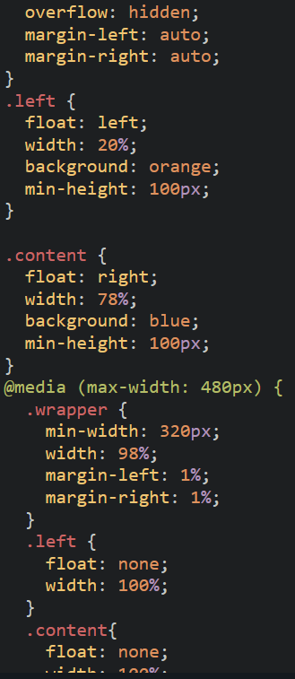
值：
none:不允许拖拽
both:宽高都可
horizontal水平：仅修改宽度
vertical竖直：仅修改高
inherit:继承父元素resize属性值
outline:red solid 2px;
outline-offset:5px //偏移量 正值为向外偏移，负值为向内偏移 需单独写
outline：inherit
配合:before（插入元素之前）:after（插入元素之后）使用
值：
none
attr()插入标签属性值
a:before{
content:attr(title);
}
<a href="#" title="我要插进去">
url()插入外部资源 string插入字符串（直接插字符串）eg:content:"插"；